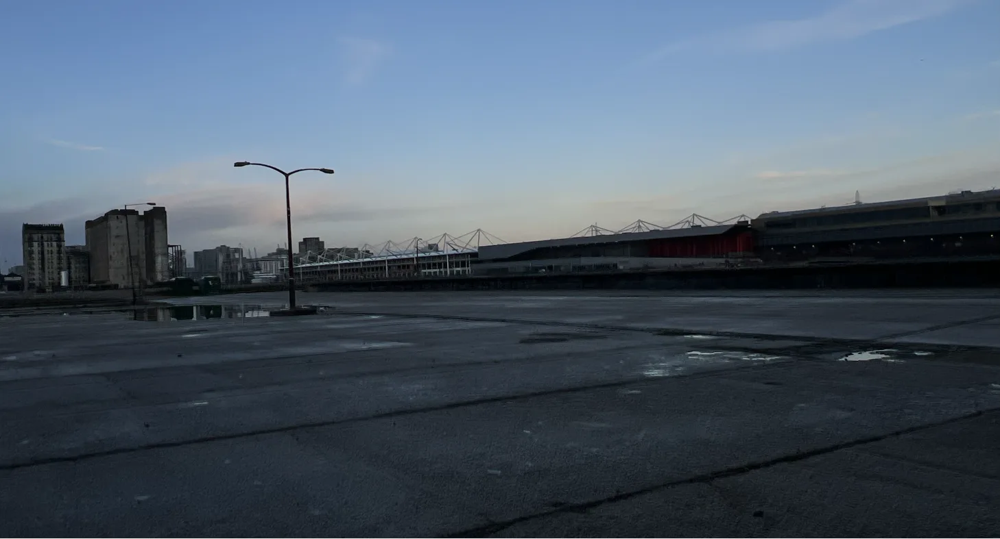

iPhone · for DPs and directors on the recce
Scout it once.
Car park & the mills
From our own recce · Royal Docks · 67 shots, one morning, one PDFGolden today —
Scout it once.
Know the shoot day.
We wanted to make recceing a little easier. So we built the things we kept wishing we had on a recce.

69A28mm · 1.85
¾ backlit · WideCar park & the mills
Built for a long day out
Nothing leaves your phone.
AccountNone. No sign-in, no tracking.
Your stillsStay on your phone until you send them.
FacesFound and blurred on the phone.
Big daysTwo hundred shots export in one go.
Pay once · no subscription
Every feature is free.
£0FreeEvery feature, on one project.PDFs carry a small credit line.
£19.99Pro · onceUnlimited projects, clean PDFs.Yours for good.